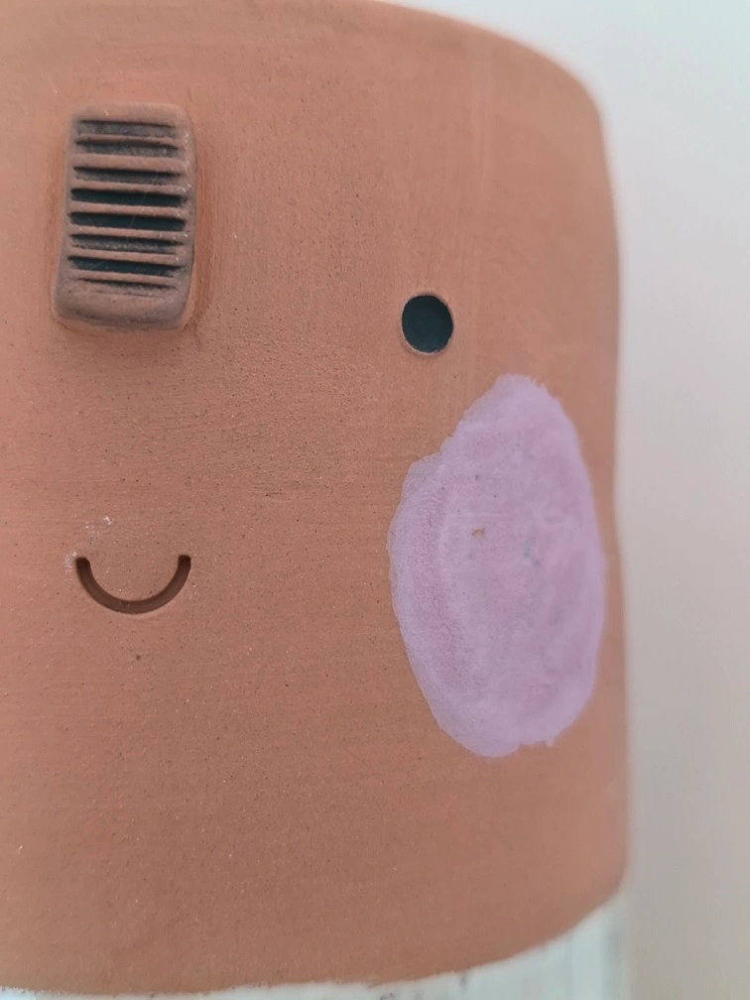

PEAT terapija
Poznati parapsiholog Živorad Slavinski rekao je za PEAT da je istodobno terapijska tehnika i sistem spiritualnog razvoja.
Kao tehnika iscjeljenja, PEAT je transpersonalna energetska terapija koja omogućuje brzo, lako i elegantno uklanjanje cijelih lanaca trauma.
Za koga je namijenjen?
Rješavanje problema je proces otklanjanja tzv. zarobljenog i potisnutog emocionalnog naboja kojeg nosimo kao posljedicu neisprocesiranih neugodnih iskustava iz života.
Upravo taj naboj daje snagu sadašnjem problemu i održava nas u istim situacijama.
Kako izgleda seansa?
Primjena ovih metoda je strukturirana – postoji jasna, predvidljiva procedura kroz koju osoba prolazi tijekom rada na svom problemu.
Do rješenja se, u većini slučajeva, dolazi brzo i proces je oslobađajući. Ovisno o problemu klijenta, odabire se najprimjerenija tehnika (Metoda prsta, DP-2, DP-4, Duboki PEAT).
Neke od tehnika traže od klijenta da zamrzne određeni događaj u slici (ugodnoj ili neugodnoj) i radi na njenoj neutralizaciji, dok kod drugih tehnika klijent duboko diše i osjeća emociju koja ga vodi dalje u proces.
Skidajući slojeve emocionalnog naboja – zaostalih, neprocesiranih sadržaja i trauma – problemi u sadašnjosti nestaju, a dobivamo jasniju sliku sebe, svijeta i univerzuma u kojem živimo.
Raste naša svjesnost o međusobnoj povezanosti svega što nas okružuje, onoga što vidimo i onoga što ne vidimo.
Ono što nam je prije predstavljalo problem, sada je iskustvo koje smo prevladali i iz kojeg smo nešto naučili. Naš razvoj se pomiče na ljestvici psihološkog i duhovnog razvoja.
Svijest o poraznoj odluci koju smo donijeli u situacijama u kojima smo bili povrijeđeni i poraženi oslobađa nas od prisile da ponavljamo iste reakcije i iskustva. Postajemo svjesni da smo sami kreatori i problema i rješenja.